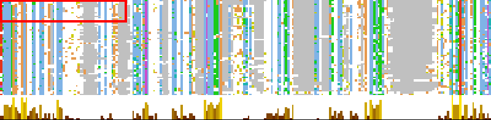

View→Overview window
Select the overview window menu item to get a navigable image of the whole alignment. By default, gaps are shown as dark grey, in the overview (since 2.10.2b1).
The red box indicates the currently viewed region of the alignment, this may be moved by clicking and dragging with the mouse.
Click anywhere else in the overview to centre the view on that position
Hiding hidden regions in the overview
Hidden sequences and columns are by default shown as dark-grey rows
and columns in the overview. Hidden regions can also be omitted
entirely (to make the Overview 'WYSIWIG') by Right-clicking
(or CMD-Clicking) to open the overview's popup menu.
The option to include/exclude hidden regions in the
overview was introduced in Jalview 2.10.2.

Previous to 2.10.2b1, gaps were white, and sequences shown as dark grey unless coloured.